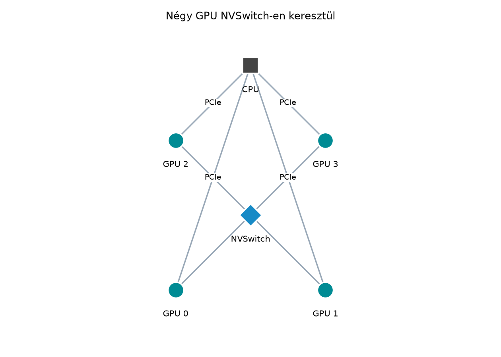

Több GPU használata logikailag egyszerű lépésnek tűnik: „adok neki
még egy eszközt, és kétszer gyorsabb leszek”. A gyakorlatban azonban a
több GPU-s programozás első szintje a per-device kontextus, a
PCIe/NVLink topológia és a peer access kérdése. Ha
ezeket nem értjük pontosan, a második GPU hozzáadása akár lassulást is
hozhat, mert a memóriamásolások rossz irányba mennek, vagy a kernelek
egy nem kívánt eszközön futnak le.
Ez az alfejezet a több GPU-s végrehajtás alapjait tanítja meg.
Megismerjük a cudaSetDevice és a
cudaMemcpyPeer alacsony szintű eszközeit, a peer access
engedélyezésének feltételeit, valamint a topológia szerepét a másolási
utak kiválasztásában. A fejezet zárásaként egy olyan labort építünk,
amely két GPU-n peer-to-peer (P2P) másolást végez, összehasonlítja a P2P
és a host-memórián keresztüli másolás sávszélességét, és mérési naplóban
rögzíti az eredményt. A labor nem méri a több-GPU skálázást; a két GPU-s
adatfelosztás kernelindítási mintáját a 26.1.1 vázlata mutatja, a
kollektív műveleteket a következő alfejezet (26.2) tárgyalja.

Négy GPU NVSwitch-en keresztül - Az
NVLink/NVSwitch topológia nagy sávszélességű GPU-GPU kommunikációt ad; a
peer access és a NCCL kollektívák ezt használják. A GPU-k a hosthoz
kártyánként PCIe-n csatlakoznak, nem az NVSwitchen
keresztül.
26.1.1 A több GPU-s végrehajtás
alapjai
A CUDA programozási modellben a host CPU egy vagy több
CUDA-eszközzel rendelkezhet. Minden eszköznek saját globális
memóriája, saját streamjei, saját kontextusa és saját hibaállapota van.
A host oldali CUDA API hívások mindig egy aktuális eszközre
vonatkoznak. Az aktuális eszköz kezdetben a 0 indexű
eszköz, de bármikor átválthatunk egy másikra a
cudaSetDevice hívással.
A több GPU-s programok esetében három alapvető kérdést kell
megválaszolni:
Melyik eszközön fut a kernel? A kernel indítása
mindig az aktuális eszközre vonatkozik.
Hol lakik a memória? A cudaMalloc
mindig az aktuális eszközön foglal.
Hogyan mozgatunk adatot két eszköz között? Erre
szolgál a cudaMemcpyPeer, amennyiben a peer access
engedélyezett.
Egy több GPU-s program váza a következő:
// Fordító: nvcc -arch=native -std=c++20 multi_gpu_basic.cu -o multi_gpu_basic#include <cuda_runtime.h>#include <cstdio>int main(){int deviceCount =0; cudaGetDeviceCount(&deviceCount); printf("CUDA devices: %d\n", deviceCount);// 1. eszköz kiválasztása cudaSetDevice(0);// ... itt minden a 0. eszközre vonatkozik// 2. eszköz kiválasztása cudaSetDevice(1);// ... itt minden az 1. eszközre vonatkozik}
A cudaSetDevice hívás hatása azonnali a host
oldali API hívásokra. A már folyamatban lévő aszinkron műveletek a
korábban kiválasztott eszközön folytatódnak, de a következő API
hívás már az új eszközre vonatkozik.
Egy kétGPU-s adatfelosztás kernelindítási mintája (vázlat, nem
fordítva): a stream és az event ahhoz az eszközhöz tartozik, amelyen
létrehoztuk, ezért a hozzájuk tartozó műveletek előtt a megfelelő
eszközt kell aktuálissá tenni; egy másik eszköz streamjébe indított
kernel hibát ad.
cudaStream_t st[2]; float *d_a[2], *d_b[2];
const size_t half = n / 2;
for (int d = 0; d < 2; ++d) {
CUDA_CHECK(cudaSetDevice(d)); // minden eszközspecifikus hívás előtt
CUDA_CHECK(cudaStreamCreate(&st[d])); // a stream a d. eszközhöz tartozik
CUDA_CHECK(cudaMalloc(&d_a[d], half * sizeof(float)));
CUDA_CHECK(cudaMalloc(&d_b[d], half * sizeof(float)));
CUDA_CHECK(cudaMemcpyAsync(d_a[d], h_a + d * half, half * sizeof(float),
cudaMemcpyHostToDevice, st[d])); // h_a: pinned
// ... kernel<<<grid, block, 0, st[d]>>>(d_a[d], d_b[d], half); ...
}
for (int d = 0; d < 2; ++d) {
CUDA_CHECK(cudaSetDevice(d));
CUDA_CHECK(cudaStreamSynchronize(st[d]));
}
Fontos különbség, hogy egy host szálon belül egyszerre csak egy
aktuális eszköz van. Több host szál használata esetén minden szál a
saját aktuális eszközével dolgozhat, de a CUDA API szálbiztonságosságára
ügyelni kell: az egyes eszközök állapotai függetlenek, de a
cudaSetDevice hívás egy host szálra érvényes, nem processz
szintű.
26.1.2 Eszközök felderítése és
tulajdonságaik
Mielőtt peer access-t próbálunk engedélyezni, tudnunk kell, milyen
eszközök állnak rendelkezésre, és milyen topológiában kapcsolódnak
egymáshoz. A CUDA API erre két fontos eszközt ad: a
cudaGetDeviceProperties és a
cudaDeviceGetP2PAttribute hívásokat.
A cudaGetDeviceProperties a cudaDeviceProp
struktúrát tölti ki, amely tartalmazza az eszköz nevét, compute
capability verzióját, órajelét, memóriaméretét, valamint a
PCI-azonosítókat (pciBusID, pciDeviceID,
pciDomainID). NVLink-kapcsolódási adatot a struktúra nem
tartalmaz; ezt az nvidia-smi topo -m és az NVML (például
nvmlDeviceGetNvLinkState,
nvmlDeviceGetTopologyCommonAncestor) adja. A
cudaDeviceGetP2PAttribute ezzel szemben konkrét P2P
képességeket vizsgál:
#include <cuda_runtime.h>#include <cstdio>#include <cstdlib>#include <string>#define CUDA_CHECK(call)\do{\cudaError_terr=(call);\if(err!=cudaSuccess){\fprintf(stderr,"CUDA error %s:%d: %s\n",__FILE__,__LINE__,\cudaGetErrorString(err));\exit(EXIT_FAILURE);\}\}while(0)int main(){int count =0; CUDA_CHECK(cudaGetDeviceCount(&count)); printf("Eszkozok szama: %d\n", count);for(int i =0; i < count;++i){ cudaDeviceProp prop{}; CUDA_CHECK(cudaGetDeviceProperties(&prop, i)); printf("[%d] %s | CC %d.%d | PCIe bus=%02x device=%02x\n", i, prop.name, prop.major, prop.minor, prop.pciBusID, prop.pciDeviceID);}// Peer access vizsgálat minden rendezett párrafor(int i =0; i < count;++i){for(int j =0; j < count;++j){if(i == j)continue;int canAccessPeer =0; CUDA_CHECK(cudaDeviceCanAccessPeer(&canAccessPeer, i, j)); printf("P2P access %d -> %d: %s\n", i, j, canAccessPeer ?"igen":"nem");}}return0;}
A cudaDeviceCanAccessPeer a legegyszerűbb módja annak
megállapítására, hogy két eszköz között lehetséges-e peer access. Ez
azonban csak a lehetőséget vizsgálja, nem az aktuális
engedélyezettséget. Az engedélyezéshez a
cudaDeviceEnablePeerAccess API hívás szükséges.
A peer access feltételei jellemzően a következők:
A peer access nem a compute capability családtól függ, hanem a
platformtól és a topológiától: a cudaDeviceCanAccessPeer
(illetve a cudaDeviceGetP2PAttributecudaDevP2PAttrAccessSupported attribútuma) adja meg, hogy
az adott eszközpár között támogatott-e. A támogatást jellemzően
befolyásoló tényezők (a pontos feltételeket a CUDA Programming Guide
„Peer-to-Peer Memory Access” szakasza rögzíti):
Fizikai topológia: közös PCIe switch/root complex
vagy NVLink/NVSwitch kapcsolat; különböző host-hidak mögött lévő
eszközökön a peer access gyakran nem támogatott.
Platformbeállítások: PCIe ACS, IOMMU/VT-d
beállítások és a BIOS gyakran letiltják a P2P-t.
Virtualizáció és MIG: virtuális gépben,
MIG-példányok között a peer access korlátozott vagy tiltott.
Operációs rendszer és driver: támogatnia kell a
peer mappinget (Linux/Windows eltérések lehetségesek).
Eszközpár: nem minden GPU-kombináció támogatja; ezt
mindig lekérdezéssel kell eldönteni, nem az azonos CC-család
feltételezésével.
A teljesítményre vonatkozó jellemzőt a
cudaDeviceGetP2PAttribute adja:
int supported =0, rank =0;CUDA_CHECK(cudaDeviceGetP2PAttribute(&supported, cudaDevP2PAttrAccessSupported,0,1));// kisebb = jobbCUDA_CHECK(cudaDeviceGetP2PAttribute(&rank, cudaDevP2PAttrPerformanceRank,0,1));printf("0 -> 1: access supported=%d, performance rank=%d\n", supported, rank);
26.1.3 A
cudaMemcpyPeer és a peer access engedélyezése
A cudaMemcpyPeer két eszköz közötti közvetlen
memóriamasolást végez. Alakja a következő:
A dst és src mutatók a megfelelő eszközök
globális memóriájában érvényes device pointerek. A
count bájtban értendő. A CUDA Runtime API leírása szerint a
hívás a hosthoz képest aszinkron lehet, de sorosított az aktuális, a
forrás- és a cél-eszközön kiadott összes függő és későbbi aszinkron
munkával (a cudaMemcpyPeerAsync ezt a sorosítást elkerüli).
Ha a hostnak biztosan meg kell várnia a másolást, szinkronizálni kell
(cudaDeviceSynchronize mindkét érintett eszközön, vagy
stream-szinkronizáció). A pontos dokumentációs megfogalmazást a használt
CUDA-verzió leírásából kell ellenőrizni.
Példa két eszköz közötti másolásra:
#include <cuda_runtime.h>
#include <cstdio>
#include <cstdlib>
#include <vector>
#define CUDA_CHECK(call) \
do { \
cudaError_t err = (call); \
if (err != cudaSuccess) { \
fprintf(stderr, "CUDA error %s:%d: %s\n", __FILE__, __LINE__, \
cudaGetErrorString(err)); \
exit(EXIT_FAILURE); \
} \
} while (0)
// Peer access engedélyezése: az ismételt engedélyezés cudaErrorPeerAccessAlreadyEnabled
// hibát ad, amit nem kezelünk hibaként.
static void enable_peer(int device, int peer) {
CUDA_CHECK(cudaSetDevice(device));
cudaError_t e = cudaDeviceEnablePeerAccess(peer, 0);
if (e == cudaErrorPeerAccessAlreadyEnabled) {
(void)cudaGetLastError(); // a hibaállapot törlése
} else {
CUDA_CHECK(e);
}
}
int main() {
const size_t N = 1 << 22; // 4M float
const size_t bytes = N * sizeof(float);
// 0. eszköz allokáció
CUDA_CHECK(cudaSetDevice(0));
float* d0 = nullptr;
CUDA_CHECK(cudaMalloc(&d0, bytes));
CUDA_CHECK(cudaMemset(d0, 0, bytes)); // inicializálás
// 1. eszköz allokáció
CUDA_CHECK(cudaSetDevice(1));
float* d1 = nullptr;
CUDA_CHECK(cudaMalloc(&d1, bytes));
CUDA_CHECK(cudaMemset(d1, 0, bytes));
// Peer access engedélyezése 1 -> 0 irányban (az 1. eszköz fér hozzá a 0. memóriájához).
// A cudaMemcpyPeer-hez ez NEM szükséges; a közvetlen kernelhozzáféréshez igen (lásd
// 26.1.4).
int canAccess = 0;
CUDA_CHECK(cudaDeviceCanAccessPeer(&canAccess, 1, 0));
if (canAccess) {
enable_peer(1, 0);
printf("Peer access 1 -> 0 engedelyezve\n");
} else {
printf("Peer access 1 -> 0 nem engedelyezheto\n");
}
// Másolás 0 -> 1 (d0-ból d1-be)
CUDA_CHECK(cudaMemcpyPeer(d1, 1, d0, 0, bytes));
CUDA_CHECK(cudaDeviceSynchronize());
printf("Peer masolas kesz: %zu bájt\n", bytes);
CUDA_CHECK(cudaFree(d0));
CUDA_CHECK(cudaFree(d1));
return 0;
}
A peerDevice annak az eszköznek az indexe, amelyikhez
hozzáférést akarunk engedélyezni az aktuális eszközről. A
flags jelenleg kötelezően 0. A hívás előtt
cudaSetDevice-szel ki kell választani azt az eszközt, amely
kezdeményezi a hozzáférést. A fenti példában az 1. eszközről
akarunk hozzáférni a 0. eszközhöz, ezért cudaSetDevice(1)
után hívjuk meg a cudaDeviceEnablePeerAccess(0, 0)-t.
Fontos aszimmetria: a peer access engedélyezés irányonként
külön történik. Ha a 0. eszközről is hozzá akarunk férni az 1.
eszközhöz, akkor cudaSetDevice(0) után
cudaDeviceEnablePeerAccess(1, 0) is szükséges. Ez az
aszimmetria gyakori hibaforrás.
A cudaMemcpyPeer nem igényel peer access-t a
másolás elvégzéséhez, csak a közvetlen P2P-másoláshoz.
Ha a peer access nincs engedélyezve, a másolás akkor is lefut, de a
driver a host memóriáján keresztül staged copy-ként hajtja
végre (device→host→device), ami jelentős többletterheléssel jár. A
cudaMemcpyPeerAsync streamhez kötött változat, amely
lehetővé teszi a másolás és a kernel-végrehajtás átfedését.
Statikus változat (mint a PDF-ben)
A cudaMemcpyPeer adatútja: (a) engedélyezett
peer access mellett közös PCIe switchen át egy átvitel, (b) NVLinken
közvetlenül, (c) peer access nélkül a host-memórián át két átvitel (D2H,
majd H2D), ezért nagyjából kétszeres idő; alul az irányonkénti
engedélyezés. A sávszélességek elméleti/adatlap értékek, nem
mérések.
26.1.4 Peer access kernelből:
közvetlen eszközhozzáférés
A peer access igazi ereje nem a cudaMemcpyPeer
egyszerűbb hívásában van, hanem abban, hogy egy kernel közvetlenül
olvashat és írhat egy másik eszköz globális memóriáját. Ezt a
mechanizmust peer device memory accessnek nevezzük. Ehhez a
peer access-t előzetesen engedélyezni kell, a kernel pedig normál device
pointerrel dolgozik, amelyet a másik eszközön foglaltunk le.
Példa: az 1. eszközön futó kernel hozzáadja a 0. eszköz memóriájában
lévő tömböt az 1. eszközön lévő tömbhöz.
__global__ void add_peer_kernel(const float* srcPeer, float* dstLocal, size_t n) {
size_t idx = size_t(blockIdx.x) * blockDim.x + threadIdx.x;
if (idx < n) {
dstLocal[idx] += srcPeer[idx];
}
}
int main() {
const size_t N = 1 << 20;
const size_t bytes = N * sizeof(float);
CUDA_CHECK(cudaSetDevice(0));
float* d0 = nullptr;
CUDA_CHECK(cudaMalloc(&d0, bytes));
CUDA_CHECK(cudaMemset(d0, 1, bytes)); // minden byte 1, float érték itt nem fontos
CUDA_CHECK(cudaSetDevice(1));
float* d1 = nullptr;
CUDA_CHECK(cudaMalloc(&d1, bytes));
CUDA_CHECK(cudaMemset(d1, 2, bytes));
// Peer access 1 -> 0
int canAccess = 0;
CUDA_CHECK(cudaDeviceCanAccessPeer(&canAccess, 1, 0));
if (canAccess) {
// az 1. eszköz kernelje eléri a 0. eszköz memóriáját (enable_peer: 26.1.3)
enable_peer(1, 0);
// Kernel az 1. eszközön, de d0 a 0. eszközön van
int threads = 256;
int blocks = (N + threads - 1) / threads;
add_peer_kernel<<<blocks, threads>>>(d0, d1, N);
CUDA_CHECK(cudaGetLastError());
CUDA_CHECK(cudaDeviceSynchronize());
printf("Peer kernel kesz\n");
} else {
printf("Peer access nem engedelyezheto, kernel nem indithato\n");
}
CUDA_CHECK(cudaFree(d0));
CUDA_CHECK(cudaFree(d1));
return 0;
}
Ha a peer access nincs engedélyezve, a kernelből való közvetlen
hozzáférés érvénytelen címre hivatkozik, és jellemzően hibával (például
cudaErrorIllegalAddress) végződik. A
cudaDeviceCanAccessPeer csak a képességet adja meg, a
hozzáférést nem engedélyezi: a kernel indítása előtt a képességet le
kell kérdezni, és a cudaDeviceEnablePeerAccess-t (a fenti
enable_peer segédfüggvénnyel) meg kell hívni.
26.1.5 Topológia és a
P2P-sávszélesség
A peer access teljesítményét a két eszköz közötti fizikai kapcsolat
határozza meg. A leggyakoribb topológiák:
PCIe switch alatt közvetlenül: az eszközök
ugyanazon PCIe switch alatt helyezkednek el. A P2P-másolás ilyenkor a
switch-en keresztül történik, a host memória érintése nélkül. A
sávszélesség a PCIe generációtól függ (PCIe 4.0 x16 ≈ 31,5 GB/s elméleti
irányonként, de a gyakorlati P2P sávszélesség ennek 60–80%-a).
NVLink: bizonyos GPU-k (A100, H100, stb.)
NVLink-kapcsolattal rendelkeznek, amely jóval nagyobb sávszélességet
biztosít (az alábbi értékek a NVIDIA adatlapjai szerintiek,
ellenőrizendők):
Generáció
GPU
Linkek száma
GB/s linkenként, irányonként
Összesen (kétirányú)
NVLink 3.0
A100
12
25
600 GB/s
NVLink 4.0
H100
18
25
900 GB/s
(A „link” nem azonos a „lane”-nel: a generációk közötti növekedést az
NVLink 4.0-nál elsősorban a nagyobb linkszám adja.). Az NVLink
P2P-másolás lényegesen gyorsabb, mint a PCIe-alapú.
Host bridge-en keresztül: ha a két eszköz
különböző PCIe host bridge-en ül, a peer access gyakran nem
engedélyezhető, vagy csak nagyon alacsony sávszélességgel működik.
Ilyenkor a driver a host memórián keresztüli másolásra esik
vissza.
NVSwitch: nagyobb rendszerekben (DGX, HGX) az
összes GPU-t egy NVSwitch hálózat köti össze, ami teljes all-to-all
NVLink sávszélességet biztosít.
A teljes topológia lekérdezésére nincs egyetlen CUDA API; a
parancssori nvidia-smi topo -m mátrix (PIX, PXB, PHB, NODE,
SYS, NV# jelölésekkel) és az NVML adja a kapcsolatokat, a
cudaDeviceGetP2PAttribute pedig az eszközpár P2P-jellemzőit
(támogatás, teljesítmény-rang, atomi műveletek). A mátrix értelmezése:
NV# NVLink-kapcsolat (a # a linkek száma), PIX
közös PCIe switch, PHB közös host bridge, SYS
a CPU-k közötti összeköttetésen átmenő út. A gyakorlatban a
legegyszerűbb módszer egy benchmark futtatása: mérjük meg a P2P-másolás
sávszélességét cudaMemcpyPeer hívással, és hasonlítsuk
össze a host-memórián keresztüli másolás sávszélességével.
Egy gyors P2P benchmark vázlata:
#include <cuda_runtime.h>
#include <algorithm>
#include <cstdio>
#include <cstdlib>
#include <vector>
#define CUDA_CHECK(call) \
do { \
cudaError_t err = (call); \
if (err != cudaSuccess) { \
fprintf(stderr, "CUDA error %s:%d: %s\n", __FILE__, __LINE__, \
cudaGetErrorString(err)); \
exit(EXIT_FAILURE); \
} \
} while (0)
// Peer access engedélyezése (azonos a 26.1.3-ban megadottal): az ismételt
// engedélyezés cudaErrorPeerAccessAlreadyEnabled hibáját nem kezeljük hibaként.
static void enable_peer(int device, int peer) {
CUDA_CHECK(cudaSetDevice(device));
cudaError_t e = cudaDeviceEnablePeerAccess(peer, 0);
if (e == cudaErrorPeerAccessAlreadyEnabled) {
(void)cudaGetLastError(); // a hibaállapot törlése
} else {
CUDA_CHECK(e);
}
}
int main() {
const size_t N = 1 << 26; // 64M float ≈ 256 MB
const size_t bytes = N * sizeof(float);
const int repeat = 20;
CUDA_CHECK(cudaSetDevice(0));
float* d0 = nullptr;
CUDA_CHECK(cudaMalloc(&d0, bytes));
CUDA_CHECK(cudaMemset(d0, 0, bytes));
CUDA_CHECK(cudaSetDevice(1));
float* d1 = nullptr;
CUDA_CHECK(cudaMalloc(&d1, bytes));
CUDA_CHECK(cudaMemset(d1, 0, bytes));
// Peer access engedélyezése mindkét irányban (enable_peer: lásd 26.1.3;
// az ismételt engedélyezés cudaErrorPeerAccessAlreadyEnabled hibáját kezeli)
int canAccess01 = 0, canAccess10 = 0;
CUDA_CHECK(cudaDeviceCanAccessPeer(&canAccess01, 0, 1));
CUDA_CHECK(cudaDeviceCanAccessPeer(&canAccess10, 1, 0));
if (canAccess01) enable_peer(0, 1);
if (canAccess10) enable_peer(1, 0);
// Másolás a célon létrehozott streamen, ugyanott rögzített eseménypárral
CUDA_CHECK(cudaSetDevice(1));
cudaStream_t s;
cudaEvent_t e0, e1;
CUDA_CHECK(cudaStreamCreate(&s));
CUDA_CHECK(cudaEventCreate(&e0));
CUDA_CHECK(cudaEventCreate(&e1));
// Warm-up: 5 másolás
for (int i = 0; i < 5; ++i) {
CUDA_CHECK(cudaMemcpyPeerAsync(d1, 1, d0, 0, bytes, s));
CUDA_CHECK(cudaStreamSynchronize(s));
}
// Mérés: ismétlésenként külön eseménypár, a medián és az IQR kerül kiírásra
std::vector<float> t(repeat);
for (int i = 0; i < repeat; ++i) {
CUDA_CHECK(cudaEventRecord(e0, s));
CUDA_CHECK(cudaMemcpyPeerAsync(d1, 1, d0, 0, bytes, s));
CUDA_CHECK(cudaEventRecord(e1, s));
CUDA_CHECK(cudaEventSynchronize(e1));
CUDA_CHECK(cudaEventElapsedTime(&t[i], e0, e1));
}
std::sort(t.begin(), t.end());
double medMs = 0.5 * (t[repeat / 2 - 1] + t[repeat / 2]);
double iqrMs = t[3 * repeat / 4] - t[repeat / 4];
double bw = (bytes / 1.0e9) / (medMs * 1e-3); // GB/s
printf("P2P masolas: %zu bájt, median ido: %.3f ms (IQR %.3f ms), "
"savszelesseg: %.2f GB/s\n",
bytes, medMs, iqrMs, bw);
CUDA_CHECK(cudaEventDestroy(e0));
CUDA_CHECK(cudaEventDestroy(e1));
CUDA_CHECK(cudaStreamDestroy(s));
CUDA_CHECK(cudaFree(d0));
CUDA_CHECK(cudaFree(d1));
return 0;
}
Ez a benchmark a P2P-sávszélességet méri (a
cudaMemcpyPeer a peer access engedélyezése nélkül is lefut,
ezért a kimenet értelmezéséhez tudni kell, hogy a peer access
engedélyezett-e). Ha a peer access nem engedélyezhető, a
cudaMemcpyPeer automatikusan a host memóriáján keresztül
másol, ami lényegesen alacsonyabb sávszélességet ad. A mért értékekből
egyértelműen azonosítható, hogy a rendszer valódi P2P-t vagy visszaeső
másolást végez-e.
26.1.6 Labor: peer access és P2P
másolás
A labor célja egy teljes, futtatható CUDA program létrehozása, amely
két GPU-n peer access-t engedélyez, P2P-másolást végez, valamint
összehasonlítja a P2P-másolás és a host-memórián keresztüli másolás
sávszélességét. A labor a korábbi ismeretekre épít, de nem igényel
NCCL-t vagy kollektív műveleteket.
26.1.7 Laborfeladat
Két GPU-t tartalmazó, MIG nélküli fizikai rendszeren (virtuális
környezetben a P2P általában nem érhető el) írjunk CUDA C++ programot,
amely:
Felderíti az eszközöket és a P2P-képességeiket.
Engedélyezi a peer access-t minden lehetséges irányban.
Lefoglal egy float tömböt mindkét eszközön.
Végrehajt egy P2P-másolást cudaMemcpyPeer-rel, és méri
a sávszélességet.
Végrehajt egy host-memórián keresztüli másolást (Manuálisan:
device→host→device) és méri annak sávszélességét.
Összehasonlítja a két sávszélességet, és megállapítja, hogy a P2P
valódi gyorsulást hoz-e.
26.1.8 A teljes laborprogram
// File: p2p_lab.cu
// Fordító: nvcc -arch=native -std=c++20 -O3 p2p_lab.cu -o p2p_lab
// Futtatás: ./p2p_lab
#include <cuda_runtime.h>
#include <cstdio>
#include <algorithm>
#include <cstdlib>
#include <vector>
#define CUDA_CHECK(call) \
do { \
cudaError_t err = (call); \
if (err != cudaSuccess) { \
fprintf(stderr, "CUDA error %s:%d: %s\n", __FILE__, __LINE__, \
cudaGetErrorString(err)); \
exit(EXIT_FAILURE); \
} \
} while (0)
// Peer access engedélyezése; az ismételt engedélyezés hibáját
// (cudaErrorPeerAccessAlreadyEnabled) nem kezeljük hibaként
static void enable_peer(int device, int peer) {
CUDA_CHECK(cudaSetDevice(device));
cudaError_t e = cudaDeviceEnablePeerAccess(peer, 0);
if (e == cudaErrorPeerAccessAlreadyEnabled) { (void)cudaGetLastError(); }
else { CUDA_CHECK(e); }
}
static void sync_both(int a, int b) {
CUDA_CHECK(cudaSetDevice(a)); CUDA_CHECK(cudaDeviceSynchronize());
CUDA_CHECK(cudaSetDevice(b)); CUDA_CHECK(cudaDeviceSynchronize());
}
// Mérési segéd: a mintákból medián és IQR (ms)
static void median_iqr(std::vector<float>& t, double& med, double& iqr) {
std::sort(t.begin(), t.end());
size_t n = t.size();
med = 0.5 * (t[n / 2 - 1] + t[n / 2]);
iqr = t[3 * n / 4] - t[n / 4];
}
// P2P másolás benchmark: a célon létrehozott streamen, ugyanott rögzített eseménypárral
void benchmark_p2p_copy(int srcDevice, int dstDevice, void* src, void* dst,
size_t bytes, int repeat, double& med, double& iqr) {
CUDA_CHECK(cudaSetDevice(dstDevice));
cudaStream_t s;
cudaEvent_t e0, e1;
CUDA_CHECK(cudaStreamCreate(&s));
CUDA_CHECK(cudaEventCreate(&e0));
CUDA_CHECK(cudaEventCreate(&e1));
for (int i = 0; i < 5; ++i) { // warm-up
CUDA_CHECK(cudaMemcpyPeerAsync(dst, dstDevice, src, srcDevice, bytes, s));
CUDA_CHECK(cudaStreamSynchronize(s));
}
std::vector<float> t(repeat);
for (int i = 0; i < repeat; ++i) {
CUDA_CHECK(cudaEventRecord(e0, s));
CUDA_CHECK(cudaMemcpyPeerAsync(dst, dstDevice, src, srcDevice, bytes, s));
CUDA_CHECK(cudaEventRecord(e1, s));
CUDA_CHECK(cudaEventSynchronize(e1));
CUDA_CHECK(cudaEventElapsedTime(&t[i], e0, e1));
}
CUDA_CHECK(cudaEventDestroy(e0));
CUDA_CHECK(cudaEventDestroy(e1));
CUDA_CHECK(cudaStreamDestroy(s));
median_iqr(t, med, iqr);
}
// Host-stage másolás benchmark: d_src -> h_stage (PINNED) -> d_dst.
// Pinned staging puffer: így a mért különbség a P2P és a host-úton történő másolás között
// nem a lapozható memória driver-oldali többletmásolásából adódik.
// A két aszinkron másolás ugyanazon a pinned pufferen fut: a D2H a forrás-, a H2D a
// céleszköz streamjén, a kettőt egy esemény köti össze. A cudaEventElapsedTime csak
// azonos eszközön rögzített események között értelmezett, ezért az eseménypár a
// célstreamen van: e0 közvetlenül a D2H kiadása előtt, e1 a H2D után.
void benchmark_host_stage_copy(int srcDevice, int dstDevice,
void* d_src, void* d_dst, size_t bytes,
int repeat, double& med, double& iqr) {
char* stage = nullptr;
CUDA_CHECK(cudaMallocHost(&stage, bytes));
cudaStream_t sSrc, sDst;
cudaEvent_t eSrc, e0, e1;
CUDA_CHECK(cudaSetDevice(srcDevice));
CUDA_CHECK(cudaStreamCreate(&sSrc));
CUDA_CHECK(cudaEventCreate(&eSrc));
CUDA_CHECK(cudaSetDevice(dstDevice));
CUDA_CHECK(cudaStreamCreate(&sDst));
CUDA_CHECK(cudaEventCreate(&e0));
CUDA_CHECK(cudaEventCreate(&e1));
auto once = [&](bool timed) {
if (timed) CUDA_CHECK(cudaEventRecord(e0, sDst));
CUDA_CHECK(cudaMemcpyAsync(stage, d_src, bytes, cudaMemcpyDeviceToHost, sSrc));
CUDA_CHECK(cudaEventRecord(eSrc, sSrc));
CUDA_CHECK(cudaStreamWaitEvent(sDst, eSrc, 0));
CUDA_CHECK(cudaMemcpyAsync(d_dst, stage, bytes, cudaMemcpyHostToDevice, sDst));
if (timed) CUDA_CHECK(cudaEventRecord(e1, sDst));
CUDA_CHECK(cudaStreamSynchronize(sDst));
};
for (int i = 0; i < 5; ++i) once(false); // warm-up
std::vector<float> t(repeat);
for (int i = 0; i < repeat; ++i) {
once(true);
CUDA_CHECK(cudaEventElapsedTime(&t[i], e0, e1));
}
CUDA_CHECK(cudaEventDestroy(e0));
CUDA_CHECK(cudaEventDestroy(e1));
CUDA_CHECK(cudaStreamDestroy(sDst));
CUDA_CHECK(cudaSetDevice(srcDevice));
CUDA_CHECK(cudaEventDestroy(eSrc));
CUDA_CHECK(cudaStreamDestroy(sSrc));
CUDA_CHECK(cudaFreeHost(stage));
median_iqr(t, med, iqr);
}
int main() {
const size_t N = 1 << 26; // 64M float
const size_t bytes = N * sizeof(float);
const int repeat = 20;
// 1. Eszközök felderítése
int deviceCount = 0;
CUDA_CHECK(cudaGetDeviceCount(&deviceCount));
if (deviceCount < 2) {
fprintf(stderr, "Legalább 2 CUDA eszköz szükséges!\n");
return EXIT_FAILURE;
}
printf("Eszkozok szama: %d\n", deviceCount);
for (int i = 0; i < deviceCount; ++i) {
cudaDeviceProp prop{};
CUDA_CHECK(cudaGetDeviceProperties(&prop, i));
printf("[%d] %s | CC %d.%d | PCIe bus=%02x device=%02x\n",
i, prop.name, prop.major, prop.minor,
prop.pciBusID, prop.pciDeviceID);
}
// 2. P2P képesség vizsgálat
for (int i = 0; i < deviceCount; ++i) {
for (int j = 0; j < deviceCount; ++j) {
if (i == j) continue;
int canAccess = 0;
CUDA_CHECK(cudaDeviceCanAccessPeer(&canAccess, i, j));
printf("P2P access %d -> %d: %s\n", i, j,
canAccess ? "igen" : "nem");
}
}
// 3. Allokáció mindkét eszközön
CUDA_CHECK(cudaSetDevice(0));
float* d0 = nullptr;
CUDA_CHECK(cudaMalloc(&d0, bytes));
// bájtonkénti inicializálás (a másolás sávszélességéhez az érték érdektelen)
CUDA_CHECK(cudaMemset(d0, 0, bytes));
CUDA_CHECK(cudaSetDevice(1));
float* d1 = nullptr;
CUDA_CHECK(cudaMalloc(&d1, bytes));
CUDA_CHECK(cudaMemset(d1, 0, bytes));
// 4. Peer access engedélyezése
int canAccess01 = 0, canAccess10 = 0;
CUDA_CHECK(cudaDeviceCanAccessPeer(&canAccess01, 0, 1));
CUDA_CHECK(cudaDeviceCanAccessPeer(&canAccess10, 1, 0));
if (canAccess01) {
enable_peer(0, 1);
printf("Peer access 0 -> 1 engedelyezve\n");
}
if (canAccess10) {
enable_peer(1, 0);
printf("Peer access 1 -> 0 engedelyezve\n");
}
// 5. P2P benchmark. A cudaMemcpyPeer peer access nélkül is lefut (host-úton), ezért mindig
// mérjük, de csak engedélyezett peer access esetén tekinthető közvetlen P2P-nek.
bool direct = canAccess01 && canAccess10;
double p2pMs, p2pIqr;
benchmark_p2p_copy(0, 1, d0, d1, bytes, repeat, p2pMs, p2pIqr);
double p2pBw = (bytes / 1.0e9) / (p2pMs * 1e-3);
printf("\n%s masolas (cudaMemcpyPeerAsync): median %.3f ms (IQR %.3f ms), "
"savszelesseg: %.2f GB/s\n",
direct ? "P2P" : "Nem kozvetlen (staged)", p2pMs, p2pIqr, p2pBw);
// 6. Host-stage benchmark
double hostMs, hostIqr;
benchmark_host_stage_copy(0, 1, d0, d1, bytes, repeat, hostMs, hostIqr);
double hostStageBw = (bytes / 1.0e9) / (hostMs * 1e-3);
printf("Host-stage masolas: median %.3f ms (IQR %.3f ms), savszelesseg: %.2f GB/s\n",
hostMs, hostIqr, hostStageBw);
// 7. Összehasonlítás
if (direct) {
double speedup = hostMs / p2pMs;
printf("\nP2P / host-stage gyorsulas: %.2fx\n", speedup);
}
CUDA_CHECK(cudaFree(d0));
CUDA_CHECK(cudaFree(d1));
return 0;
}
26.1.9 Build és futtatás
# Build (nvcc verziótól függően -arch=native vagy -arch=sm_80)nvcc-arch=native -std=c++20 -O3 p2p_lab.cu -o p2p_lab# Futtatás./p2p_lab
26.1.10 Mérési napló
(kitöltendő)
A labor nem került futtatásra, ezért a napló mért értéket nem
tartalmaz; az alábbi minta a program kimenetének formátumát és a
rögzítendő környezetet mutatja. A környezeti adatokat a hallgató a saját
rendszeréről tölti ki (nvidia-smi -q,
nvidia-smi topo -m).
GPU: <kitöltendő: modell és darabszám; példa: 2 × NVIDIA A10,
compute capability 8.6, TDP 150 W>
A sávszélességet a program bytes / 1e9 / idő képlettel
számolja, ahol bytes = 256 MiB ≈ 268,4 MB; a naplóban
szereplő értékeknek ezzel összhangban kell lenniük (például 268,4 MB 15
ms alatt ≈ 17,9 GB/s).
Várt viselkedés (nem mérés):
A host-stage másolás két egymás utáni átvitelt jelent (D2H, majd
H2D), ezért ugyanazon a PCIe-útvonalon a P2P-másoláshoz képest
nagyságrendileg kétszeres idő várható (várt gyorsulás ≈ 2×, ha a P2P
eléri a PCIe sávszélességét; ezt a hallgató méri). Mindkét útban a PCIe
4.0 x16 elméleti sávszélessége ≈ 31,5 GB/s irányonként, a gyakorlati
érték ennek 60–80%-a; NVLink esetén a P2P sávszélesség ennél lényegesen
nagyobb lehet. A mérésben a staging puffer pinned, így a különbség a két
útvonalból adódik, nem a lapozható memória többletmásolásából; érdemes
külön sorban lapozható pufferrel is mérni.
26.1.11 Tipikus hibák és
megoldásuk
A több GPU-s programozásban a leggyakoribb hibák a következők:
Elfelejtett cudaSetDevice a
cudaMalloc előtt. A cudaMalloc mindig
a aktuális eszközön foglal. Ha a program az 1. eszközön akar
foglalni, de a 0. eszköz van kiválasztva, a foglalás rossz eszközre
kerül. Megoldás: minden eszközspecifikus API hívás
előtt explicit cudaSetDevice.
Aszimmetrikus peer access engedélyezés. Ha a 0.
eszközről az 1. eszközre akarunk másolni, de csak az 1. eszközről a 0.
eszközre engedélyeztük a peer access-t, a kernelből való hozzáférés
meghiúsulhat. Megoldás: mindkét irányban engedélyezzük
a peer access-t, ha mindkét irányú hozzáférést használunk.
Peer access használata MIG esetén. MIG-példányok
esetén a peer access gyakran nem támogatott, mert a memória izolált.
Megoldás: ellenőrizzük a
cudaDeviceCanAccessPeer-t, és a programot ennek megfelelően
ágaztassuk.
Staged copy figyelmen kívül hagyása. Ha a peer
access nem engedélyezett, a cudaMemcpyPeer továbbra is
működik, de a host memóriáján keresztül. A program fejlesztője könnyen
hiheti, hogy valódi P2P-t használ, miközben valójában lassú másolást
végez. Megoldás: mindig mérjük a sávszélességet, és
hasonlítsuk össze a várható P2P-sávszélességgel.
Kernelből való peer hozzáférés engedélyezés
nélkül. A cudaDeviceCanAccessPeer csak a
képességet adja meg, nem véd; engedélyezés nélkül a kernel érvénytelen
címhez fér hozzá (jellemzően cudaErrorIllegalAddress).
Megoldás: a képesség lekérdezése után a
cudaDeviceEnablePeerAccess hívása (az
cudaErrorPeerAccessAlreadyEnabled kezelésével).
26.1.12 Gyakorlati
ellenőrzőlista
Mielőtt egy több GPU-s programot éles környezetben futtatnánk,
érdemes a következő lépéseket végigjárni:
Eszközök száma és típusa:
cudaGetDeviceCount és cudaGetDeviceProperties
lekérdezés.
P2P képesség: cudaDeviceCanAccessPeer
minden irányban.
Peer access engedélyezés:
cudaSetDevice + cudaDeviceEnablePeerAccess
minden szükséges irányban.
Allokációk ellenőrzése: minden
cudaMalloc előtt cudaSetDevice a megfelelő
eszközre.
Másolási stratégia: P2P használata, ha lehetséges;
különben host-stage copy.
Sávszélesség mérése: P2P és host-stage
összehasonlítása a tényleges nyereség igazolására.
Hibakezelés: minden API hívás ellenőrzése
CUDA_CHECK makróval.
Izolált környezet és hibaellenőrzés: a hibás
P2P-használat a kernel futását hibával állíthatja le, ezért a
kernelindítás után cudaGetLastError, a szinkronizálás után
(az érintett eszközökön) cudaDeviceSynchronize visszatérési
értékének ellenőrzése kötelező.
26.1.13 Összefoglalás
A több GPU-s végrehajtás alapja a per-device kontextus:
minden API hívás az aktuális eszközre vonatkozik, amit
cudaSetDevice-szel választhatunk meg. A két eszköz közötti
adatmozgatásra a cudaMemcpyPeer szolgál, amely valódi
P2P-másolást végez, ha a peer access engedélyezett. A peer access
engedélyezése a cudaDeviceEnablePeerAccess hívással
történik, irányonként külön-külön. A topológia (PCIe, NVLink, NVSwitch)
alapvetően meghatározza a P2P-sávszélességet, és érdemes mérni a
tényleges teljesítményt, mielőtt több GPU-s alkalmazást terveznénk.
A következő alfejezet (26.2) erre az alapra épít, és bemutatja az
NCCL-könyvtárat, amely a kollektív műveletek (allreduce, broadcast,
allgather) hatékony, topológia-tudatos megvalósítását biztosítja több
GPU között. Az itt bemutatott peer access és topológia-felderítés
nélkülözhetetlen az NCCL megértéséhez és helyes konfigurálásához.
26.1.14 Ellenőrző kérdések
Mi a különbség a cudaMemcpyPeer és a
cudaMemcpy viselkedése között, ha a peer access nincs
engedélyezve?
Miért kell cudaSetDevice-t hívni a
cudaMalloc előtt, és mi történik, ha elmarad?
Hogyan befolyásolja a topológia (PCIe vs. NVLink) a P2P-másolás
sávszélességét?
Miért aszimmetrikus a cudaDeviceEnablePeerAccess
hatása, és hogyan kell kezelni ezt a programban?
Milyen kockázata van annak, ha kernelből peer hozzáférést használunk
a cudaDeviceCanAccessPeer ellenőrzése és a
cudaDeviceEnablePeerAccess hívása nélkül?
Megoldókulcs (röviden):
Peer access nélkül a cudaMemcpyPeer is lefut, de a
driver a host memóriáján keresztül másol (staged); a
cudaMemcpy ezzel szemben a pointerekből (UVA,
cudaMemcpyDefault) következtethet az irányra, de a két
eszköz közötti másolásnál a cudaMemcpyPeer explicit
eszközazonosítókat vár. Unified Virtual Addressing esetén a
cudaMemcpyDefault is képes eszközök közötti másolásra.
A cudaMalloc az aktuális eszközön foglal;
cudaSetDevice nélkül a puffer a 0. (vagy a legutóbb
kiválasztott) eszközre kerül, és a későbbi kernel- vagy másolási hívás
hibás vagy lassú lesz.
PCIe-n a P2P sávszélesség a PCIe-generációtól és -szélességtől függ
(PCIe 4.0 x16 ≈ 31,5 GB/s irányonként), NVLink-en lényegesen nagyobb
(A100: 12 link × 25 GB/s irányonként); NVSwitch teljes all-to-all
kapcsolatot ad.
Az engedélyezés irányonként külön hívás (az aktuális eszköz kap
hozzáférést a peerhez); mindkét irányú hozzáféréshez mindkét irányban
meg kell hívni.
Érvénytelen címhivatkozás, kernelhiba
(cudaErrorIllegalAddress), a program leállása; a képesség
lekérdezése nélkül ráadásul a kód nem támogatott eszközpáron nem
hordozható.
![Három azonos elrendezésű panel: felül CPU és host-memória, középen PCIe switch, alul GPU 0 és GPU 1 egy-egy 256 MiB-os pufferrel. (a) Egy számozott folytonos nyíl GPU 0-tól a switchen át GPU 1-ig, felirat: 1 átvitel, a PCIe 4.0 ×16 31,5 GB/s-ának 60–80%-a, 256 MiB körülbelül 11–14 ms. (b) Vastag NVLink-él közvetlenül a két GPU között, 12 link × 25 GB/s irányonként, körülbelül 0,9 ms. (c) Két számozott szaggatott nyíl: 1. GPU 0-tól a host-memóriába, 2. a host-memóriából GPU 1-be, felirat: 2 átvitel, körülbelül kétszeres idő. Alul: az 1 → 0 irány a cudaSetDevice(1) és cudaDeviceEnablePeerAccess(0, 0) hívással engedélyezhető, ekkor az 1. eszköz kernelje olvashatja a d0-t; a 0 → 1 irányhoz a cudaSetDevice(0) és cudaDeviceEnablePeerAccess(1, 0) kell.](figures/img/gpu098-p2p-paths.png)